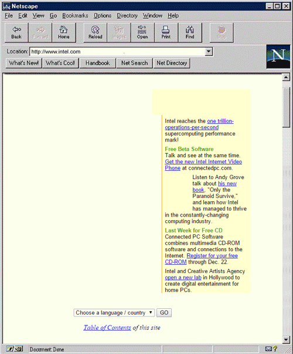
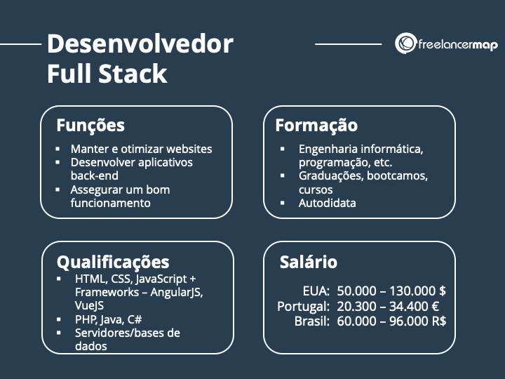
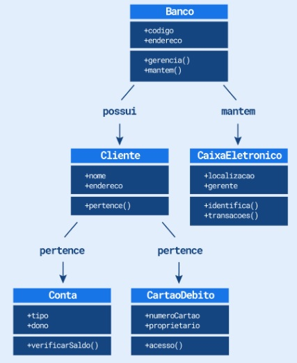
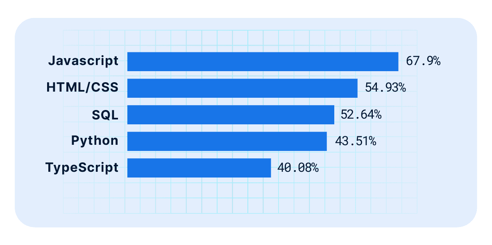
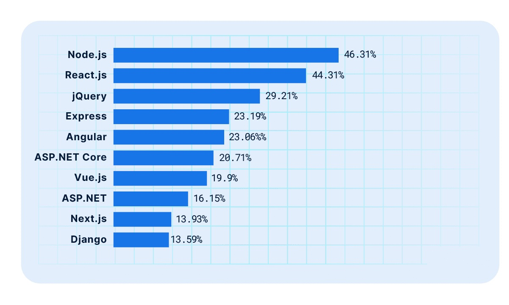
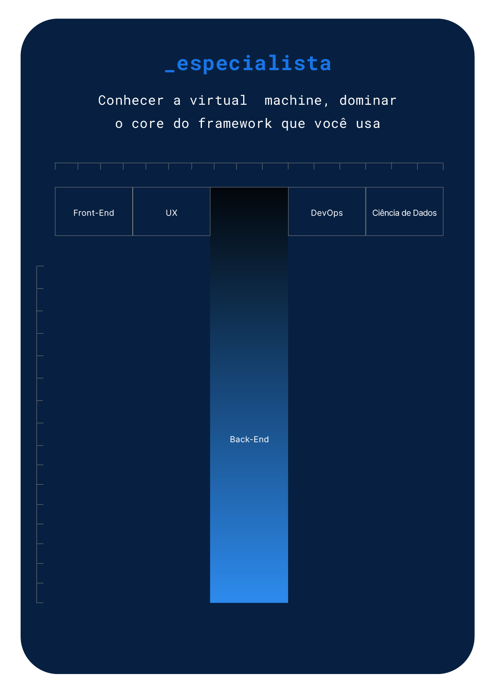

Independente da fase de maturidade de um Dev (júnor, pleno ou sênior), podemos desencadear um estado de espírito maior chamado Dev Cansado. Esse podcast é seu!

Imagine ser capaz de construir uma aplicação web completa do início ao fim, incluindo interface de usuário, lógica do lado do servidor e integração de banco de dados. Isso parece impossível? Não para desenvolvedores full stack. Esses profissionais possuem habilidades em diversas áreas de desenvolvimento de software e são muito valorizados no mercado, muito por terem uma visão ampla de todas as etapas do desenvolvimento (front-end, back-end, devops, banco de dados e mobile). Um desenvolvedor full-stack é um programador que controla o desenvolvimento de front-end (cliente) e back-end (servidor) de aplicativos da Web, software e sites. Mas o que faz exatamente um desenvolvedor full stack?
Os desenvolvedores full stack combinam as habilidades de desenvolvedores front-end e programadores back-end. Eles são capazes de trabalhar com bases de dados e servidores e de assumir tarefas de administradores de sistema ou cientistas de dados. O desenvolvedor full stack entende a conexão entre a experiência do usuário ao usar uma interface (front-end) e o que acontece nos servidores e armazenamento de dados (back-end). Eles podem trabalhar em todas as áreas de desenvolvimento de software e, portanto, são muito procurados no mercado de trabalho. Este perfil é tão completo que é um dos mais procurados por pequenas e médias empresas que, principalmente em seu início, precisam otimizar recursos.
Na área de desenvolvimento de software, o termo “full stack” é utilizado para designar pessoas desenvolvedoras capazes de lidar com todo o ciclo de vida do desenvolvimento de uma aplicação. Desse modo, dev full stack é uma pessoa com o perfil multidisciplinar, que possui habilidades para atuar em diferentes partes de um projeto.
É relevante ressaltar que desenvolvedores full stack também têm a capacidade de atuar no desenvolvimento de aplicativos móveis, por meio do uso de tecnologias como o React Native e o Flutter, as quais possibilitam a criação de aplicativos para diferentes plataformas a partir de um único código base.
Com os frequentes avanços nas tecnologias, é cada vez mais comum que devs full stack conheçam sobre outras áreas que vão além do desenvolvimento em si, como:
No começo dos anos 90, período inicial da internet, as páginas da web eram bastante simples. Elas eram compostas por HTML, CSS e um pouco de JavaScript. Desta forma, existia uma função que conseguia lidar com todas as demandas relacionadas ao desenvolvimento web, a função de webmaster. Não havia uma distinção entre desenvolvedor front-end nem back-end, assim um desenvolvedor web cuidava de todas as partes do desenvolvimento.
Com o passar dos anos, surgiram novas tecnologias e a web foi se desenvolvendo. Surgiram, no começo dos anos 2000, os primeiros frameworks voltados para o desenvolvimento front-end, como o jQuery, Ember.JS e Backbone.JS. Eles foram os precursores dos frameworks modernos de front-end, como React, Vue e Angular.
Dessa maneira, surge uma preocupação entre os desenvolvedores em aprimorar o front-end. Páginas web tão simples já não eram mais aceitáveis, e espera-se que essas aplicações tenham a mesma qualidade que as aplicações desktop. Era necessário o uso de ferramentas mais robustas para construir o front-end das páginas na web. Com o aumento dessa complexidade, ocorre uma distinção entre front-end (responsável pela montagem da interface e captura das interações dos usuários) e back-end (responsável por processar as informações coletadas). Diante dessa divisão, especializar-se apenas em uma das áreas tornou-se uma tarefa demorada. Apesar dessa especialização em áreas distintas, ainda havia profissionais capazes de lidar com todas as etapas do desenvolvimento.
Assim, por volta dos anos 2000, surge o termo "Full Stack" para descrever os desenvolvedores que possuem habilidades tanto no front-end quanto no back-end de aplicações web.
A tarefa do desenvolvedor é criar, manter e aprimorar sistemas e aplicações. Geralmente, eles trabalham em conjunto com profissionais como analistas de sistemas, designers e gerentes de projetos, com o objetivo de desenvolver soluções que satisfaçam as necessidades dos clientes finais.
Algo que pode gerar dúvidas é a diferença entre dev e um analista de sistemas. Afinal qual a diferença? Enquanto o foco do trabalho como dev é principalmente código, o de analista de sistemas envolve mais a compreensão do negócio, para descrever requisitos e especificações técnicas do projeto.
Resumindo, uma pessoa desenvolvedora é alguém que soluciona problemas por meio de códigos, criando aplicações web ou mobile, jogos, programas desktop ou outros softwares. Para começar na área de desenvolvimento de softwares, é necessário adquirir algumas habilidades técnicas. Veja a seguir:
As atribuições de um desenvolvedor full stack podem variar bastante. Eles desempenham um papel abrangente em todas as etapas do desenvolvimento, desde a concepção até a implementação. Além disso, um desenvolvedor full stack também apoia a gestão de projetos e analisa os requisitos de um aplicativo ou programa. Como resultado, frequentemente são encarregados de planejar, programar e realizar testes funcionais do software. Isso envolve solucionar problemas de sistemas, gerenciar ou administrar projetos complexos que podem envolver várias linguagens de programação ou o desenvolvimento de front-end e back-end. Na prática, também podem atuar como consultores para outros desenvolvedores e programadores, além de fornecer suporte e aconselhamento a outros departamentos que necessitam.
Iremos mostrar cada campo de desenvolvimento - frontend, backend e mobile - e também citar outros campos relacionados, como banco de dados e devops. Afinal de contas, todo desenvolvedor, seja ele front-end, back-end ou full stack, precisa ao menos ter conhecimento desses campos e entender de forma básica como eles operam.

A responsabilidade do desenvolvimento front-end abrange tudo o que está visível para o usuário em uma aplicação. Nesse sentido, trata-se da área do desenvolvimento responsável pelo design e pela interação do usuário com a aplicação. Esse escopo engloba a criação de interfaces de usuário, utilizando principalmente HTML, CSS e JavaScript, além de suas diversas estruturas. Cada uma dessas tecnologias tem um papel fundamental na criação de uma página.
A documentação de ambos é muito abrangente e os desenvolvedores front-end não precisam memorizar cada uma das estruturas e propriedades do HTML e CSS, mas sim ter experiência e saber utilizar essas ferramentas para encontrar soluções para os desafios diários.
Ao considerar a rapidez de execução, a modularização de funcionalidades e outros benefícios, desenvolvedores frequentemente escolhem utilizar frameworks e bibliotecas, sendo as principais utilizadas atualmente:
Além disso, é fundamental que a pessoa responsável pelo desenvolvimento da interface tenha familiaridade com o UX Design. Essa área busca técnicas que assegurem a intuitividade, facilidade de uso e agradabilidade na interação do usuário com a interface. No contexto do UX Design, a pessoa especializada conduz pesquisas com usuários, cria protótipos e wireframes, realiza testes de usabilidade e colabora com outras equipes de design e desenvolvimento para criar produtos que sejam eficientes e satisfaçam as necessidades dos usuários finais.
Portanto, é essencial que o desenvolvedor front-end esteja ciente dos processos envolvidos em cada uma dessas etapas, sendo até comum vermos desenvolvedores front-end desempenhando essas tarefas em determinados casos.
A implementação das regras de negócios e o processamento dos dados e informações enviados pelos usuários, bem como o gerenciamento de todo o fluxo de informações no aplicativo, são responsabilidades atribuídas ao desenvolvimento back-end. De acordo com a complexidade do projeto ou o nível de experiência do indivíduo, faz-se comum que os desenvolvedores back-end utilizem uma ou mais linguagens de programação. Algumas linguagens frequentemente empregadas no desenvolvimento back-end incluem Java, Python, Ruby, PHP, JavaScript e C#.
Assim como no desenvolvimento front-end, existem frameworks que simplificam a tarefa do desenvolvimento back-end, como:
Além do desenvolvedor back-end, é importante mencionar a presença de uma profissão fundamental no desenvolvimento de sistemas, que frequentemente é confundida com o back-end, o Administrador de Banco de Dados, também conhecido pela sigla em inglês DBA (Database Administrator).
Enquanto os desenvolvedores de back-end são responsáveis por implementar as regras de negócio, processar dados e gerenciar o fluxo de informações nos aplicativos, os administradores de banco de dados (DBAs) têm a responsabilidade de gerir, manter e otimizar os sistemas de bancos de dados, desempenhando um papel crucial no armazenamento e processamento eficiente de grandes volumes de dados.
É como ter uma pessoa encarregada das configurações, atualizações do banco e outros aspectos relacionados à administração adequada desse banco (DBA), ao passo que outra pessoa irá interagir e manipular esses dados para atender às exigências do sistema (desenvolvedor de back-end).
No entanto, em muitas empresas, essas funções se misturam, sendo muito comum que os desenvolvedores de back-end assumam as responsabilidades dos DBAs.
Outro ponto crucial do back-end é a criação do banco de dados de forma eficiente. Através dessa etapa, é possível desenvolver um modelo que represente de maneira otimizada as informações a serem armazenadas no sistema. Nessa definição, são determinados os campos que serão incluídos no banco de dados, seja ele um banco de dados SQL, como o Postgres, no qual as informações são armazenadas em tabelas, ou um banco de dados NoSQL (Not Only SQL), como o MongoDB, que armazena os dados em documentos flexíveis com estrutura semelhante ao JSON ou em formato chave-valor para a transferência de informações.
Existem várias técnicas e ferramentas disponíveis para a modelagem de dados, como o diagrama de caso de uso, o diagrama entidade-relacionamento e o diagrama de classe apresentado na figura a seguir.
Cada retângulo apresenta um nome representando a classe (por exemplo, Banco). Logo abaixo, encontramos informações sobre os atributos que fazem parte dessa classe e os métodos que ela é capaz de executar. Por exemplo, a classe Conta possui o atributo tipo, utilizado para indicar se é uma conta corrente ou não, e o atributo dono, que representa o proprietário da conta. Além disso, a classe Conta possui o método verificaSaldo(), que retorna o saldo da conta específica.
As linhas presentes nesse contexto demonstram as relações entre essas classes. Por exemplo, entre as classes cliente e conta, temos uma linha intitulada "possui", indicando que um cliente pode ter uma ou várias contas.
Além da modelagem, programadores back-end fazem uso de linguagens de manipulação de dados, como o SQL, que é amplamente reconhecido e utilizado para consultas, alterações e outras operações na maioria dos bancos de dados SQL. Considerando os bancos de dados NoSQL, a linguagem de programação utilizada para trabalhar com eles pode variar de acordo com o tipo de banco de dados NoSQL:

É de conhecimento geral que existem tecnologias que tornam a vida dos desenvolvedores mais fácil ao construir o front-end e o back-end utilizando a mesma linguagem. Nesse contexto, para a manipulação de banco de dados, surgem soluções como ORM's (Mapeamento Objeto-Relacional) e ODM's (Mapeamento Objeto-Documento). Resumidamente, o termo "mapeamento" é amplamente utilizado na programação para se referir ao processo de converter dados de uma estrutura para outra estrutura.
No caso, é possível escrever suas consultas utilizando uma linguagem de programação como o TypeScript, e o ORM adequado, como por exemplo o Sequelize, fará o mapeamento para a estrutura compreendida pelo seu banco de dados, aliviando essa preocupação para o desenvolvedor.
Uma outra parte significativa refere-se às APIs (Interfaces de Programação de Aplicação). Tais interfaces possibilitam a comunicação entre distintos sistemas, permitindo a troca de informações e dados em tempo real. Amplamente empregadas em aplicações web e mobile, as APIs desempenham o papel de integrar variados sistemas e serviços.
Além do mais, em geral, os desenvolvedores de back-end colaboram com especialistas em DevOps para estabelecer e manter a infraestrutura dos servidores. Essa vertente também se torna fundamental, pois é através dela que asseguramos a continuidade e o adequado funcionamento dos sistemas.
Os termos "front-end" e "back-end" são amplamente utilizados na área de desenvolvimento de software e podem gerar confusão para aqueles que não estão familiarizados com esses conceitos. Para compreender a diferença entre front-end e back-end, podemos fazer uma analogia com a construção de uma casa.
O front-end pode ser comparado à fachada da casa, representando a primeira impressão que as pessoas têm ao chegar. Ele é responsável por toda a apresentação visual do sistema, ou seja, aquilo que o usuário enxerga e com o que interage. Isso engloba elementos como layout, cores, imagens e animações.
Por outro lado, o back-end pode ser comparado à estrutura da casa, sendo responsável por dar suporte e manter o funcionamento do sistema. Ele é encarregado da parte lógica do sistema, o que inclui elementos como armazenamento de dados, segurança e processamento de informações.
Ambas as áreas estão relacionadas e são igualmente importantes no desenvolvimento de um software. Enquanto o front-end cuida da experiência do usuário e da interface com o usuário, o back-end cuida da lógica do sistema e do processamento de dados.
O desenvolvedor de aplicativos móveis tem a responsabilidade de criar aplicativos para dispositivos móveis, como smartphones e tablets. Suas tarefas incluem a concepção da interface do aplicativo, a implementação de recursos específicos para dispositivos móveis, como o uso de sensores, GPS e notificações push, e a integração com APIs de serviços externos, como redes sociais e serviços de pagamento.
Além disso, os desenvolvedores móveis são encarregados de criar uma experiência do usuário (UX) agradável e intuitiva, garantindo que o aplicativo seja fácil de usar e acessível para os usuários.
As tecnologias utilizadas pelos desenvolvedores móveis variam de acordo com o sistema operacional do dispositivo. Para o iOS, Swift e Objective-C são as principais linguagens utilizadas, enquanto para o Android, Java e Kotlin são as linguagens mais comumente utilizadas.
Na programação, uma stack é um conjunto de tecnologias utilizadas para criar aplicações. Em português, a palavra stack equivale a "pilha". Assim como uma pilha é composta por várias camadas de algo, uma stack tecnológica é formada por diferentes camadas de tecnologias, englobando:
Deste modo, o back-end utiliza diferentes pilhas para o seu desenvolvimento, assim como o front-end. É importante compreender a finalidade de cada tecnologia, a fim de ser capaz de escolher a melhor combinação entre elas de acordo com os objetivos desejados.
A tradução literal do termo full stack para o português é "pilha completa", portanto, desenvolvedores full stack são indivíduos que possuem conhecimento em ambas as "pilhas" de tecnologias: front-end e back-end. Agora, o termo full stack faz mais sentido, certo?
Todas essas definições podem gerar uma questão: será que os desenvolvedores full stack precisam dominar todas as tecnologias?
A resposta para essa pergunta é não! Devs Full Stack não precisam conhecer todas as tecnologias. Seria irrealista esperar que uma pessoa saiba todas as tecnologias. O conhecimento full stack normalmente engloba um arcabouço de ferramentas para desenvolver o front-end, back-end e o banco de dados de uma aplicação, ou seja, stacks específicas para cada parte do desenvolvimento.
Como o desenvolvedor FullStack trabalha com múltiplas tecnologias e frameworks, faz-se necessário a escolha de uma trilha de conhecimentos com base em seu interesse e possível demanda do mercado, focando assim tempo e esforço do Dev. Veja a seguir as principais trilhas/Stacks:
Como podemos notar, há uma grande variedade de opções. No entanto, estas não são as únicas. Existem diversas outras combinações de tecnologias front-end e back-end. Nesse sentido, os desenvolvedores full stack geralmente se especializam em uma dessas combinações. Agora, você pode estar se questionando: qual delas devo aprender? Qual é a melhor opção entre elas?
Depois de conhecer as principais opções para o desenvolvimento full stack, é comum questionar: e agora? Qual a área de programação mais adequada? Qual caminho devo seguir?
Não existe uma área de programação que seja superior, pois isso é uma questão individual. A melhor área dependerá dos seus gostos, habilidades e interesses. As demandas e necessidades do mercado podem servir como guia para nos orientar sobre quais áreas estão em alta. No entanto, é importante lembrar que até isso depende do momento. Portanto, é recomendável manter-se atualizado sobre as principais tendências do mercado, para assim alinhar com seus objetivos pessoais de carreira.
Você pode estar se perguntando quais são as opções mais procuradas pelo mercado de software atualmente. Então, vamos conferir os dados.
A cada ano, são conduzidas pesquisas com o objetivo de aprimorar o conhecimento sobre a situação do mercado de tecnologia. Dentre essas pesquisas, uma que se destaca é aquela realizada pelo Stack Overflow, a qual oferece uma perspectiva sobre as linguagens e ferramentas mais amplamente utilizadas, bem como as aspirações daqueles que trabalham nessa área.
De acordo com o levantamento realizado pelo Stack Overflow em 2022, o qual contou com a participação de mais de 70 mil profissionais, as cinco linguagens mais populares entre desenvolvedores atualmente são: JavaScript, HTML/CSS, SQL, Python e TypeScript. Isso pode ser observado na figura a seguir:
Já as dez ferramentas mais utilizadas são: Node.js, React.js, jQuery, Express, Angular, ASP.NET Core, Vue.js, ASP.NET, Next.js e Django. Como mostra a imagem abaixo:
Assim, é possível constatar que as pilhas mencionadas anteriormente realmente despertam interesse no mercado, pois muitas de suas linguagens de programação e frameworks são amplamente utilizados atualmente. Vale ressaltar que as tecnologias estão constantemente evoluindo e se transformando, o que implica na mudança das demandas do mercado ao longo dos anos. Portanto, o que é popular hoje pode não ser mais no futuro.
Até agora, pude observar algumas das responsabilidades de um profissional de desenvolvimento full stack. Esta é uma profissão que exige habilidades em diversas áreas, porém, existem algumas concepções equivocadas sobre o que ela abrange:
A respeito do que não é um full stack, observamos um termo cada vez mais frequente no campo da tecnologia: ciclo completo. No ciclo completo, o trabalho vai além da codificação. É preciso colaborar em equipe com outras áreas, como design, UX, testes, infraestrutura e gerenciamento de projetos, para assegurar que o produto seja entregue de acordo com as expectativas.
Os desenvolvedores de ciclo completo também têm a responsabilidade de implementar, testar, monitorar e manter o produto. Eles devem garantir que o produto esteja funcionando corretamente e atendendo às necessidades dos usuários ao longo do tempo.
Apesar de possuir algumas habilidades semelhantes aos desenvolvedores full stack, o seu papel é mais abrangente e exige um entendimento mais profundo do negócio e do processo de desenvolvimento
É bastante comum ouvirmos de desenvolvedores full stack que iniciaram sua programação apenas no back-end ou front-end e depois se especializaram em outra área. Isso está muito relacionado ao conceito de Dev em T (ilustrado na imagem abaixo), pois o perfil de um "Dev em T" é alguém que é especialista em uma área e generalista em outras. Portanto, é comum que os full stacks comecem se especializando em algo e, em seguida, se especializem também em outra área na qual eram apenas generalistas.
Para aqueles que estão iniciando na programação full stack, o ponto de partida usual é como desenvolvedor júnior, onde serão aprendidas as habilidades necessárias para lidar com as diferentes camadas do sistema e contribuir em projetos de menor complexidade.
Em seguida, é possível progredir para a posição de desenvolvedor pleno, onde haverá maior autonomia e responsabilidade em projetos mais complexos. A partir daí, existem várias possibilidades de especialização e avanço na carreira. Existem desenvolvedores full stack que podem optar por se especializar em uma camada do sistema, tornando-se especialistas em back-end ou front-end, por exemplo. Também há aqueles que buscam cargos de liderança, como gerente de projetos ou arquiteto de software.
A progressão como profissional full stack pode variar muito, mas geralmente envolve a combinação de especialização em uma ou mais áreas do sistema e o desenvolvimento de habilidades de liderança e gestão de projetos.
Independente da fase de maturidade de um Dev (júnor, pleno ou sênior), podemos desencadear um estado de espírito maior chamado Dev Cansado. Esse podcast é seu!

Podcast sobre desenvolvimento web, um episódio novo toda sexta-feira!

É o podcast onde o pessoal da Caelum e da Alura entram em discussões acaloradas sobre programação, design, ux, gadgets, startups e as últimas modinhas em tecnologia.
Sed varius enim lorem ullamcorper dolore aliquam aenean ornare velit lacus, ac varius enim lorem ullamcorper dolore.